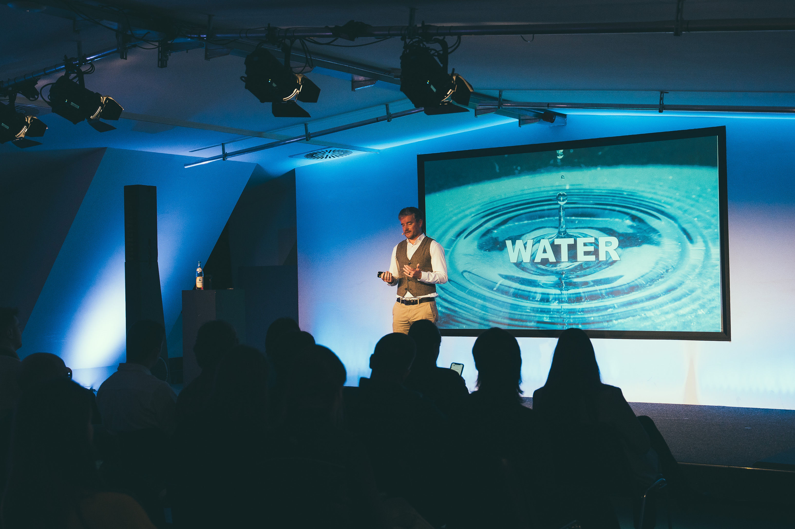
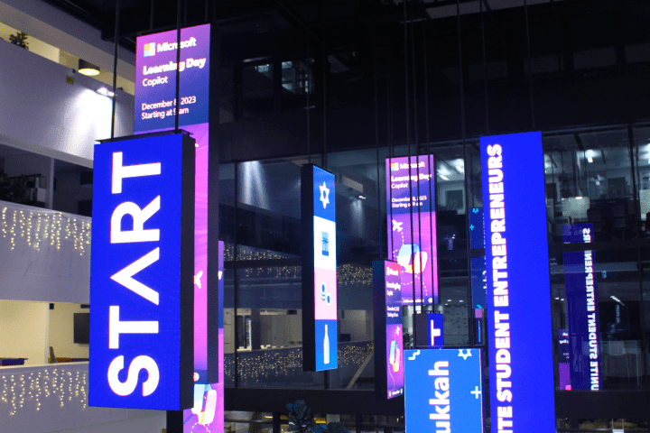

START Berlin is Berlin's largest student-run entrepreneurship non-profit. As part of the START Network we offer students direct access to the startup world.



START Berlin is the leading student-run initiative at the intersection of entrepreneurship, technology, and innovation in Germany’s capital. Since 2013, we’ve empowered students from all Berlin universities to shape the future by connecting them with the city’s vibrant startup ecosystem.
With members from 20+ nationalities, START Berlin is a uniquely international platform where students, startups, and corporates come together. From aspiring founders to future tech leaders, our community provides the resources, mentorship, and hands-on experience to transform ideas into ventures.

We’re part of the international START Network, which includes 15 chapters across Europe and South America. This connection allows us to exchange knowledge, collaborate internationally, and give our members access to the broader entrepreneurial ecosystem. Through the network, members can engage with a wide range of peers, attend international events like the START Summit, and gain insights from different regional startup environments.
Cities
Members
Alumni
Our yearly pitching competition highlights select early-stage startups from Berlin. Winners secure a pitching slot at START Summit, Europe's prominent student-led conference attracting 6,000+ attendees. The event includes keynotes and networking opportunities, connecting entrepreneurs, investors and industry professionals.
join waiting listOur events connect students, founders, venture capitalists and industry experts. We organize practical workshops, Q&A sessions, panel discussions and networking opportunities that facilitate knowledge sharing and professional connections within our community.
We connect our members with established startups and venture capital firms, providing insight into how innovation develops and investment decisions are made. These relationships give participants practical understanding of company building processes and funding strategies through direct engagement with founders and investors.
Our yearly pitching competition highlights select early-stage startups from Berlin. Winners secure a pitching slot at START Summit, Europe's prominent student-led conference attracting 6,000+ attendees. The event includes keynotes and networking opportunities, connecting entrepreneurs, investors and industry professionals.
Our events connect students, founders, venture capitalists and industry experts. We organize practical workshops, Q&A sessions, panel discussions and networking opportunities that facilitate knowledge sharing and professional connections within our community.
We connect our members with established startups and venture capital firms, providing insight into how innovation develops and investment decisions are made. These relationships give participants practical understanding of company building processes and funding strategies through direct engagement with founders and investors.
join waiting list
Our yearly pitching competition highlights select early-stage startups from Berlin. Winners secure a pitching slot at START Summit, Europe's prominent student-led conference attracting 6,000+ attendees. The event includes keynotes and networking opportunities, connecting entrepreneurs, investors and industry professionals.

Our events connect students, founders, venture capitalists and industry experts. We organize practical workshops, Q&A sessions, panel discussions and networking opportunities that facilitate knowledge sharing and professional connections within our community.
join waiting listWe connect our members with established startups and venture capital firms, providing insight into how innovation develops and investment decisions are made. These relationships give participants practical understanding of company building processes and funding strategies through direct engagement with founders and investors.
join waiting list
Join START Berlin to kickstart your entrepreneurial journey. Connect with founders, VCs, and like-minded students through exclusive events, hands-on workshops, and a strong, supportive community.
LEARN MORE
Partner with START Berlin—Berlin’s leading student-run hub for entrepreneurship and innovation. Connect with top talent, gain visibility in a vibrant ecosystem, and shape the future of entrepreneurship alongside the next generation of founders.
LEARN MORE
"START was the best learning environment I’ve ever been in. At 23, I led a team, made mistakes, and actually learned how to get things done—not just alone, but with others."

"START Berlin changed everything. I found a community of driven, like-minded people who inspired me to grow both personally and professionally. START opened doors I didn't know existed."

"START Berlin gave me so much value—not just during my time as a member, but long after. Through the community, I landed my first job and built lasting friendships here in Berlin."


Find out how you can become a member of START Berlin.
Find out how you can become a member of START Berlin.
We are happy to talk!